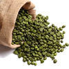
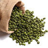

| TIpos de Café para degustar | ||||
| Tipo | Característica | Imagen | Precio | Sabor |
|---|---|---|---|---|
| Café natural | Sabor suave y natural |  |
1,20 $ | Intenso |
| Café ecológico | Tratado sin productos químicos |  | 1,50 $ | |
| TIpos de Café para degustar | ||||
| Tipo | Característica | Imagen | Precio | Sabor |
|---|---|---|---|---|
| Café natural | Sabor suave y natural | |
1,20 $ | Intenso |
| Café ecológico | Tratado sin productos químicos |  | 1,50 $ | |